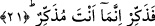
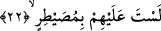

mesâbesindedir. Bundan dolayı kalbi simgeleyen “cibal” yâni dağ kelimesi nefsi
simgeleyen “deve”, ruhu simgeleyen “sema” kelimesinden sonra ifâde edilmiştir.
Nitekim rüyada görülen dağ erkeklerden “ehl-i kulûb”; yâni kalp ehli kimseler olarak
tâbir edilirler. Çünkü ehl-i kulûb; gerçekte yeryüzünün manevi kazıkları ve
umdeleridirler. Tıpkı dağların sûreten dünyanın çakılmış kazıkları oldukları gibi.
Âyet-i kerimede, kalbi temsil eden “cibal” kelimesi için “yaratılma” fiilinin değil de
“dikilme” fiilinin kullanılmasıyla işâret edilen gerçek şudur: Kalpler aslında -sûreten
bir ana-babadan dünyaya gelmiş çocuk mesâbesinde görülseler de- melekuti bir
varlıktırlar. Aynı âyette “arz/yeryüzü” kelimesiyle süflî cesedlere işâret olunmaktadır.
Bundan dolayı bu kelime mertebe itibariyle geriye bırakılmış yukardaki simgelerden
daha sonra ifâde olunmuştur. Allah Teâlâ beşeriyet ve cesediyet arzını nefislerin istikrar
yeri olsunlar diye yaymıştır. Nefisleri ise kalplerin bulunacak olduğu yerler olmaları
için yaratmıştır. Kalplere gelince onları ruhun arşları olmak üzere yoktan var etmiştir.
Hatta kalpler sırrın dahası ondan da gizli olan şeylerin arşı olmak üzere yoktan var
edilmiştir. Allah’ın şu âyeti tertibe koyması ne kadar alımlı ve ne kadar güzeldir. Âyet
bütünüyle bakıldığında ne kadar sağlam ve güzel bir uyuma, düzene sâhiptir. Bu âyet
sanki yazı yazacak kâtib, kalem, kağıd ve mürekkebi bir arada toplamış gibidir. Her
şeyin iç yüzünü ve en doğrusunu ancak Allah bilir.
21. O halde (Rasûlüm), öğüt ver. Çünkü sen ancak öğüt vericisin.
Bu âyetin başındaki “fâ” harfi, öğüt verme emrinin yukarda işâret edilen düşünmeme
ve inkârdan sonra geldiğini göstermektedir. Buna göre âyete mânâ vermek gerekirse
şöyle deriz: Sen sâdece onlara öğüt vermekle yetin. Bu konuda onlara ısrarcı olma,
onların düşünmemeleri, öğüt almamaları seni üzmesin. “Sen ancak bir öğüt vericisin.”
Bu ifâde; az önce geçen “ögüt ver” emrinin sebebini ifâde etmektedir. Buna göre âyette
şöyle denmiş olmaktadır: Sen ancak bir tebliğcisin, hidâyet ve başarıya ulaştırma ise
sâdece ve sâdece Allah’a âiddir.
22. Onların üzerinde bir zorba değilsin.
Sen onları istediğine icbar edecek, bunu zorla yaptıracak bir zorba değilsin. Nitekim
aynı mânâyı bir başka âyet-i kerimede şu şekilde görüyoruz: “Sen onların üzerinde bir
zorlayıcı değilsin.” (Kaf, 50/45)
Kırâat âlimlerinin ekserisi bu âyeti “sad” harfiyle “musaytır” şeklinde okumuşlardır.